Play with the Model using Your Own Text Prompts!
I stuck to the default prompts given and generated their embeddings using the provided Huggingface clusters.
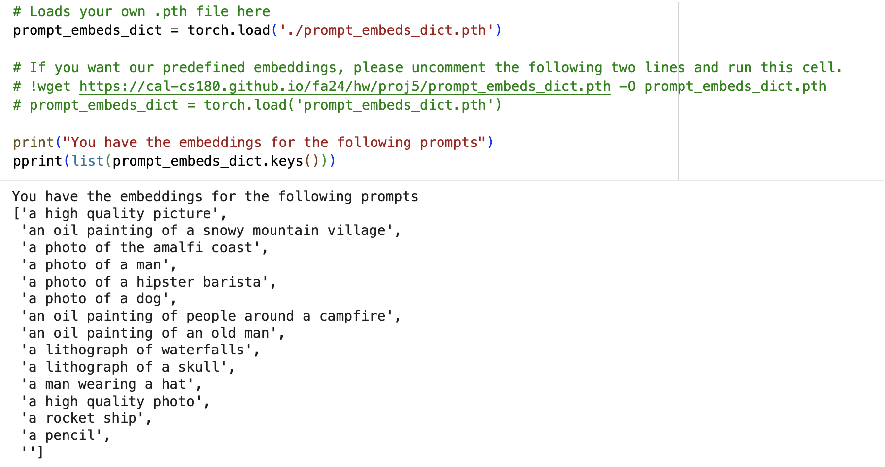
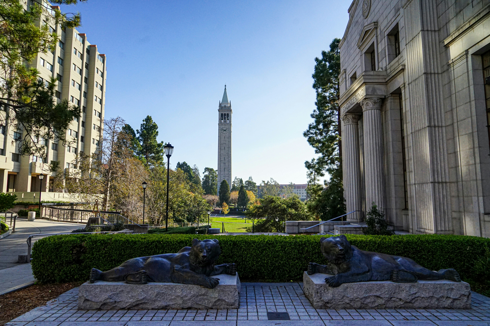
(25 November 2025) Part 0: Setup | Part 1: Sampling Loops
Background image source: UnsplashI stuck to the default prompts given and generated their embeddings using the provided Huggingface clusters.

Using the prompts 'a photo of a hipster barista', 'an oil painting of a snowy mountain village' and 'a high quality photo', I generated the following images with seed = 180.
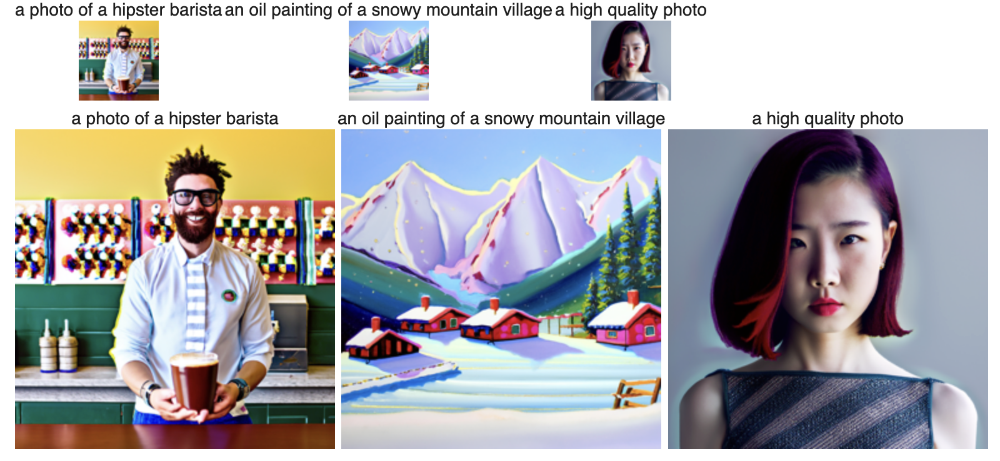
I implemented forward(im, t), which simulates the forward diffusion process by adding Gaussian noise at timestep t. Using the cumulative noise schedule alphas_cumprod from the DeepFloyd scheduler, the noisy image is computed as
x_t = sqrt(alpha_bar_t) * x_0 + sqrt(1 - alpha_bar_t) * eps,
where eps ~ N(0, I). I applied this to the Campanile image resized to 64×64 and visualized increasing noise levels at timesteps t = [250, 500, 750].
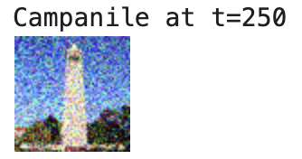
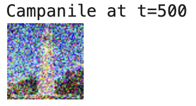
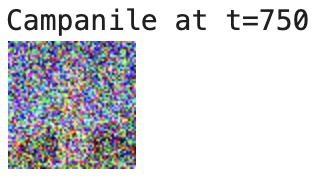
I tried to denoise the noisy Campanile images using only classical image processing. I applied torchvision.transforms.functional.gaussian_blur with different kernel sizes and sigmas. Getting good results was quite difficult with this approach alone.
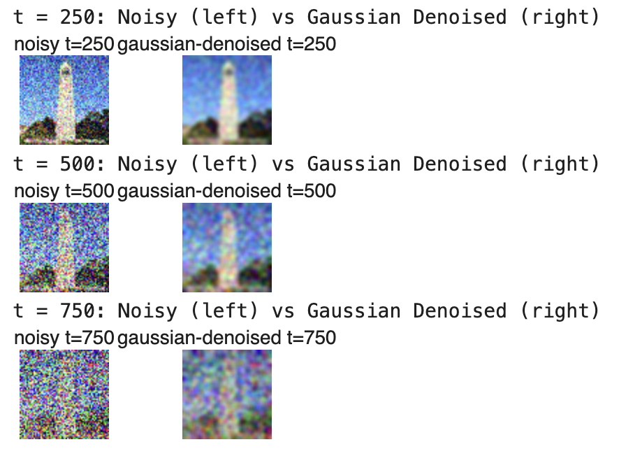
The result from the previous part is not as desirable as seen from the output images. Next I used stage_1.unet to estimate the noise at a given timestep. The model outputs 6 channels; I treat the first three as the noise estimate and the latter three as variance. Using the provided embedding for "a high quality photo", I implemented a single reverse diffusion step that reconstructs an estimate of the original Campanile.
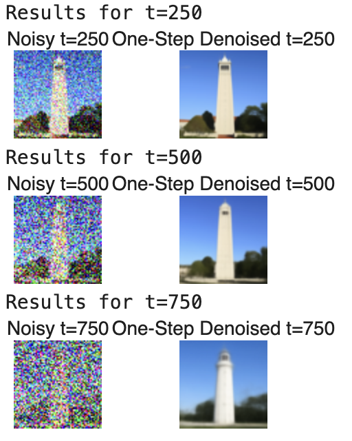
Compared to Gaussian blur, the UNet recovers the global structure much better, but at high timesteps the reconstruction is still somewhat blurry.
I created a strided schedule strided_timesteps = [990, 960, ..., 0] with stride 30 and configured the scheduler via stage_1.scheduler.set_timesteps. Then I implemented iterative_denoise(im_noisy, i_start), which repeatedly applies the DDPM update rule using the UNet noise estimates and the helper add_variance function.
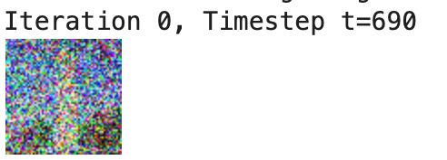
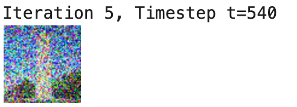
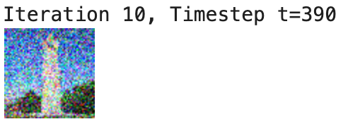
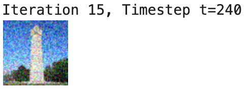
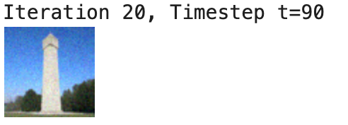
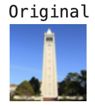
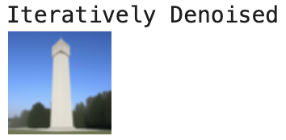
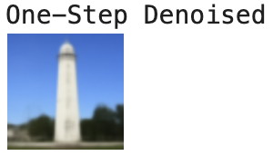
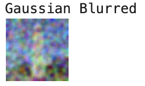
With iterative_denoise in place, I can sample images from scratch by starting from pure Gaussian noise x_T ~ N(0, I) and running the loop from i_start = 0 all the way to the end. I conditioned on the prompt "a high quality photo" and generated five random samples.
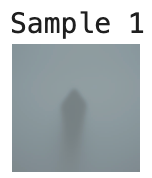
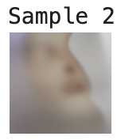
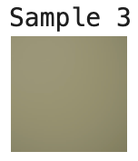
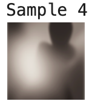
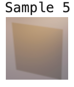
These images are somewhat recognizable but the quality is not good.
I implemented iterative_denoise_cfg, which runs the UNet twice at each timestep: once with the conditional prompt, and once with an empty prompt embedding (the unconditional estimate). The final noise estimate is
eps_cfg = eps_uncond + gamma * (eps_cond - eps_uncond)
where I used gamma = 7 as recommended. I then sampled five new images of "a high quality photo".
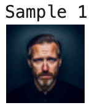
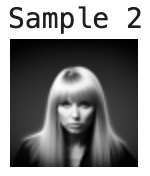
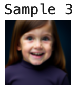
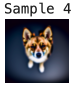
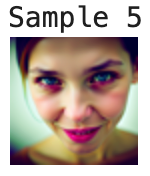
The results are much better than those from section 1.5, demonstrating the effectiveness of CFG for improving image quality.
To perform SDEdit I first used the forward function to add noise to the original Campanile and my custom images up to a timestep corresponding to different i_start values. Then I applied iterative_denoise_cfg starting from that timestep. This follows the SDEdit algorithm, which allows us to make edits to existing images by noising and denoising them.
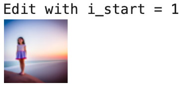
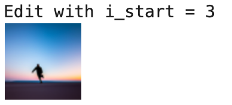
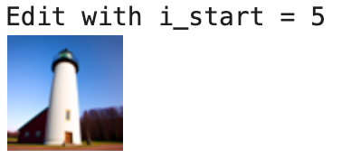
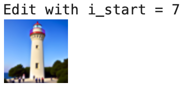
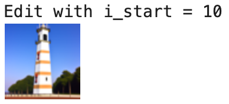
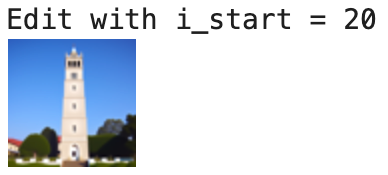
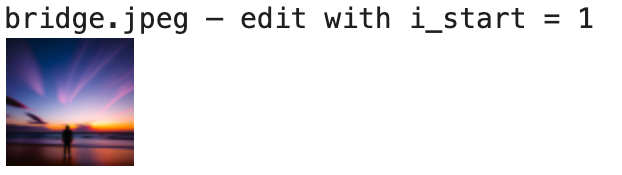
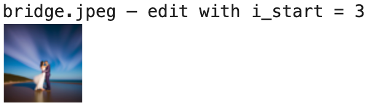
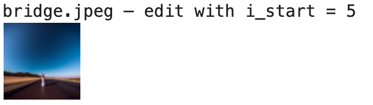
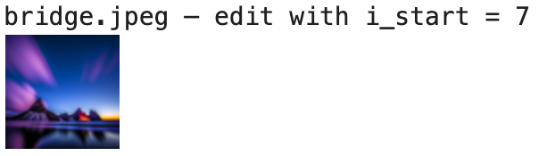
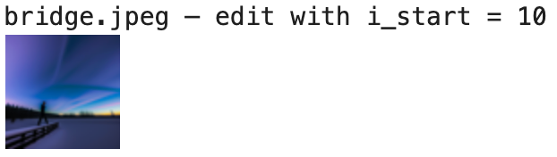
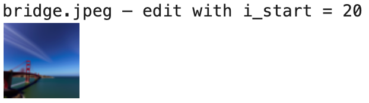
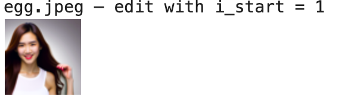
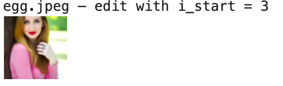
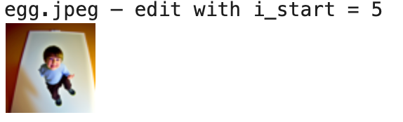
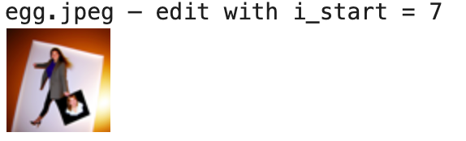
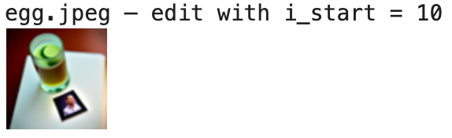
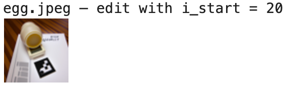
This procedure works particularly well if we start with a nonrealistic image (e.g. painting, a sketch, some scribbles) and project it onto the natural image manifold.
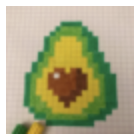
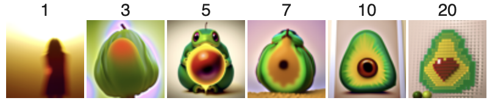

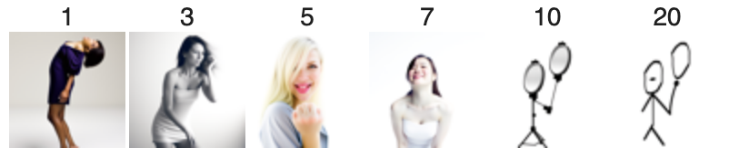

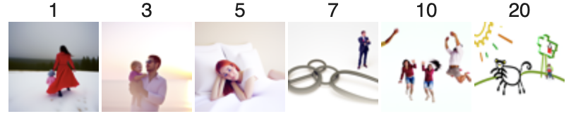
For inpainting I implemented inpaint(original_image, mask, ...) following the RePaint paper. At each iteration I first ran a CFG denoising step to get a new latent image, then overwrote the unmasked region with the forward-noised original image, following
x_t ← m * x_t + (1 - m) * forward(x_orig, t)
where m is 1 inside the editable region. This keeps everything outside the mask consistent with the original while letting the model hallucinate inside.
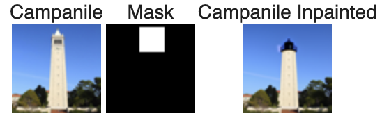
I repeated the SDEdit pipeline but replaced the original prompt "a high quality photo" with other prompts such as "a rocket ship" to add more control over the generation process. This is no longer pure projection to the natural image manifold, but also adds control using language.
To create a visual anagram I implemented make_flip_illusion following the Visual Anagrams paper.
At each step I:
The resulting image looks like one prompt when upright and like the other when flipped.
Finally I implemented make_hybrids to combine the low frequencies of one prompt with the high frequencies of another, following the Factorized Diffusion paper. I computed CFG noise estimates epsilon_1 and epsilon_2 for prompts p_1 and p_2, blurred them with
torchvision.transforms.functional.gaussian_blur (kernel size 33, sigma 2),
and formed
eps = lowpass(eps1) + highpass(eps2) = blur(eps1) + (eps2 - blur(eps2))
Using this composite noise in the reverse step yields a single image that resembles one concept from afar but reveals another up close.